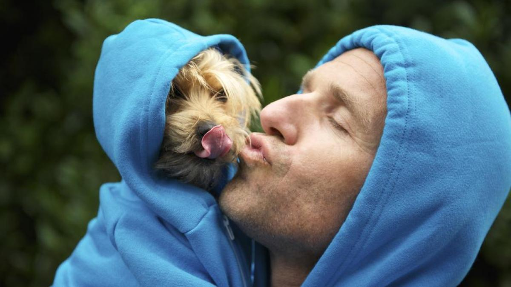
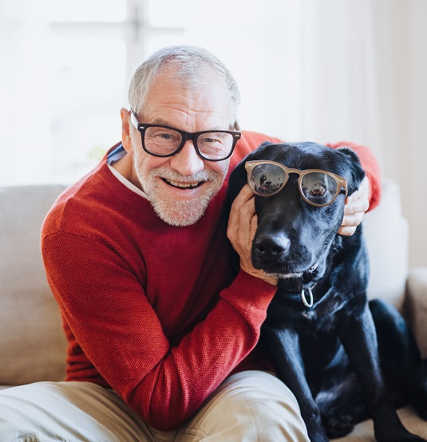

Ana Victoria
Adopte a rocky cuando tenia 6 años, fue la mejor decision que pude haber tomado es una gran compañia y un gran guardian para la casa


Adopte a rocky cuando tenia 6 años, fue la mejor decision que pude haber tomado es una gran compañia y un gran guardian para la casa

Adopte a totto despues de participar en un voluntariado para la fundacion, fue una experiencia muy linda y la recomiendo mucho, ahora vivo con mi perro y no me hace falta compañia.

Adopte a manchas cuando tenia 10 años a pesar de su edad es un perro bastante activo y jugueton, fue una de las mejores decisiones de mi vida, estoy muy feliz a su lado.